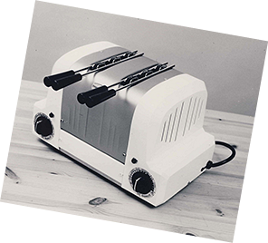

발명에 대한
한 남자의 영감으로 시작된 듀얼릿
한 남자의 영감으로 시작된 듀얼릿
1940s
타고난 발명가 유전자
발명가 아버지 밑에서 자란 창립자 Max Gort-Barten이 제 2차
세계 대전 후 영국 캠버웰 공장 설립, 첫 제품으로 칵테일 쉐이커를
생산
듀얼릿 사명의 유래가 된 ‘듀얼 라이트 히터(Dual Light heater
- 두 개의 열판을 장착해 가열 공간이 넓은 난방기)’ 출시
‘플립 사이드 토스터(Flip side toaster - 한 면을 다 구운뒤
뒤집어 다른 한면을 굽는 토스터)’로 첫 상업적 성공 기록
1950s
‘듀얼릿’의 탄생
기계식 타이머와 수동 배출 레버를 장착한 업소용 6구 토스터 생산
정부의 지원으로 올드켄트 로드에 새로운 공장 설립
1960s
슈퍼스타의 등장
가열 슬롯을 선택할 수 있는 스위치를 토스터에 장착
토스트를 따뜻하게 유지하는 '핫 토스트 컵보드(Hot toaster
cupboard)' 기능을 토스터에 추가
투입구에 케이지 삽입이 가능한 샌드위치 토스터 출시
빵의 한 면만 별도로 굽는 번(Bun) 토스터 출시
와플 메이커가 출시
영국 호화 여객선 ‘퀸 엘리자베스 2호’에 제품 제공
1970s
쉐프에서부터 소비자까지

존루이스(John Lewis), 포트넘 앤 메이슨(Fortnum &
Mason) 및 해러즈(Harrods) 등 프리미엄 백화점에 납품
Max Gort-Barten의 아들, Leslie Gort-Barten에 경영에
합류
1980s
수요의 폭발적 성장
가열 슬롯을 선택할 수 있는 스위치를 토스터에 장착
토스트를 따뜻하게 유지하는 '핫 토스트 컵보드(Hot toastercupboard)' 기능을 토스터에 추가
투입구에 케이지 삽입이 가능한 샌드위치 토스터 출시
빵의 한 면만 별도로 굽는 번(Bun) 토스터 출시
와플 메이커가 출시
영국 호화 여객선 ‘퀸 엘리자베스 2호’에 제품 제공
1990s
성장과 혁신
듀얼릿 최초로 무선 360° 회전대 장착한 전기포트 출시
바(Bar) 전용 제품인 아이스 크러셔, 드링크 믹서, 블랜더 등 출시
1999년 우주 왕복선 기술 활용해 토스터 부품에 적용한 ‘프로히트엘리멘트(Proheat element)’ 개발로 ‘밀레니엄 어워드(Millennium award)’ 수상
2000s
새로운 보금자리, 새로운 제품
새로운 부지, 서섹스 크라울리로 회사 이전
듀얼릿 최초의 푸드프로세서 런칭
신규 토스터 모델인 ‘라이트(Lite)’ 출시
반자동 에스프레소 머신 출시
커피 파우더 또는 ESE 커피 포드(Pods)모두 사용 가능한‘에스프레시보(Espressivo)’ 커피머신 출시로 듀얼릿의 멀티브루(multi-brew) 머신 라인 개척
베이글 기능 추가된 ‘뉴젠(NewGen)’ 클래식 토스터 런칭
2010s
고객 선택의 폭 확대
듀얼릿 최초 캡슐 커피머신 런칭
자체 캡슐 생산 공장 오픈, 듀얼릿과 네스프레소 커피머신 모두호환되는 특허 커피 캡슐 개발
‘아키텍트(Architect)', ‘스튜디오 바이 듀얼릿(Studio byDualit)’ 라인의 전기포트와 토스터 런칭